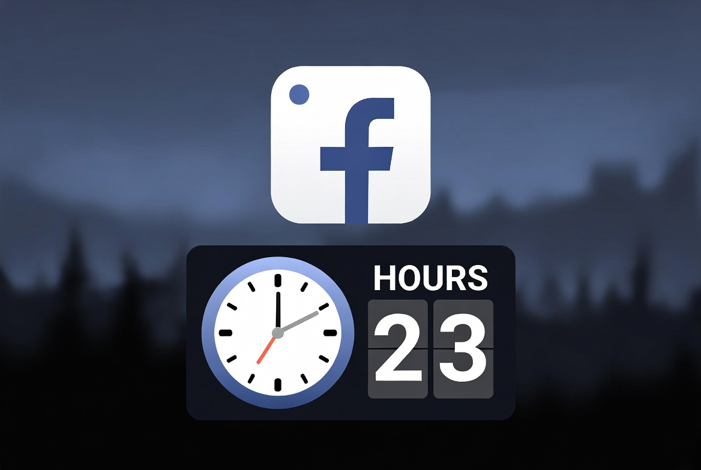
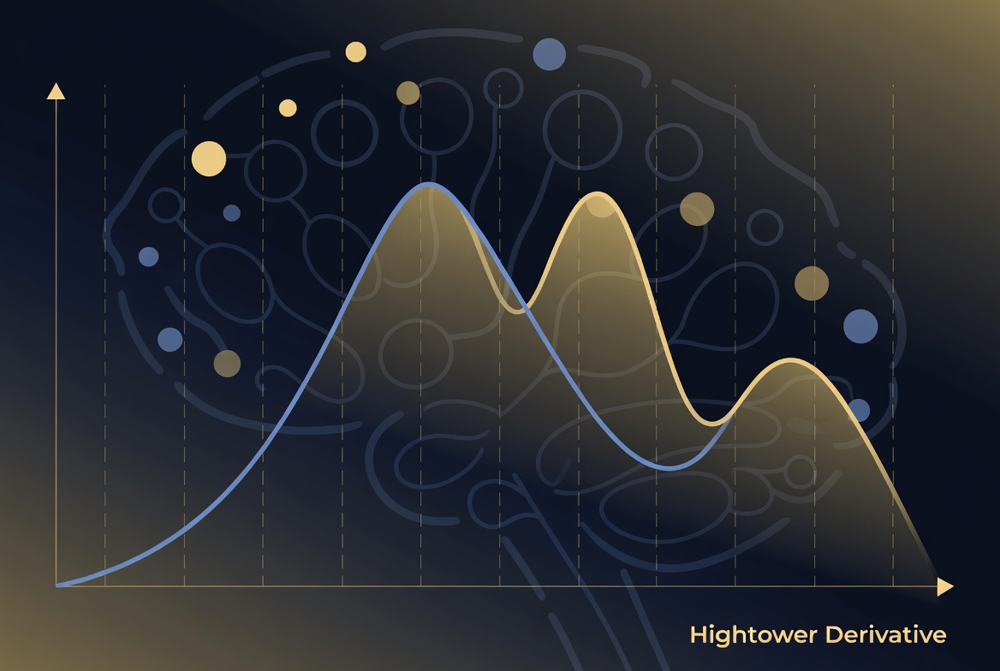

Facebook held the aggregate numbers on how many hours a vulnerable young demographic spent on the platform. Those numbers showed harm. They refused to release them. They refused to chart them. The public conversation was steered toward whether Facebook should exist at all. That framing protected the people who already controlled the data and the revenue. It did nothing for the people being overexposed.
The same pattern is now running on artificial intelligence.

The Binary Is the Distraction
Labs that sell model access and companies that sit below or above the model layer are arguing about whether open weights should exist. That argument is the emotional distraction. It keeps the focus on a binary that consolidates power among those already earning from the current structure. It does not force the release of the only numbers that matter.
The only numbers that matter are the measured rate at which continuous contact with frontier systems is restructuring human attention, memory consolidation, intermediate reasoning, and judgment. That rate is the Hightower Derivative. There is no untreated population. There is no control group. The experiment is already global.

A Note on Incentives
I have not earned a dollar since 2018. The people currently claiming ethical superiority while shaping the regulatory conversation continue to earn. I invite them to a debate on the facts, not the branding.
Public safety requires the aggregate measurements of cognitive acceleration to be public and chartable, the same way the hours-per-day numbers should have been public years ago. It requires keeping enough of the stack inspectable that independent parties can still run those measurements. It does not require another round of moral theater from institutions that already hold net worth, regulatory access, and institutional leverage.
What Public Safety Actually Requires
We need power distributed to people for their humanity, not concentrated according to net worth and the aggregate hands already held inside government institutions and regulatory bodies.
Measurement first. Transparency on the rate of change. Then the constraints that actually protect the public. Everything else is the Facebook playbook applied to cognition itself.
Open weights do not solve the derivative by themselves. They keep the measurement surface distributed. When the weights remain available, local builders, inventors, and small teams can still inspect, adapt, verify, and run independent tests against the acceleration curve. When the weights are locked and the policy conversation is shaped by the same labs that benefit from scarcity, the rate of cognitive change becomes an unobservable variable controlled by a handful of organizations.
Continue the Measurement
The High Tower District Letters archive exists to keep second-order observations public and timestamped.
letters.ahightower.comVerified Sources & Context
- Original statement of the Hightower Derivative — Aaron Hightower · April 2026
- The Hightower Derivative (full essay) — High Tower District Stories · 2026
- OpenAI / Anthropic open-weights lobbying reports — Wall Street Journal · July 2026; New York Times · July 2026
- Industry letter defending open models — Nvidia, Microsoft, Meta, Palantir and others · July 2026
- Anthropic public position — “Anthropic has never advocated for a ban on open-weights models” · Dario Amodei · July 2026
- Historical parallel: social media youth screen-time data transparency — Public reporting and research record, 2010s–2020s